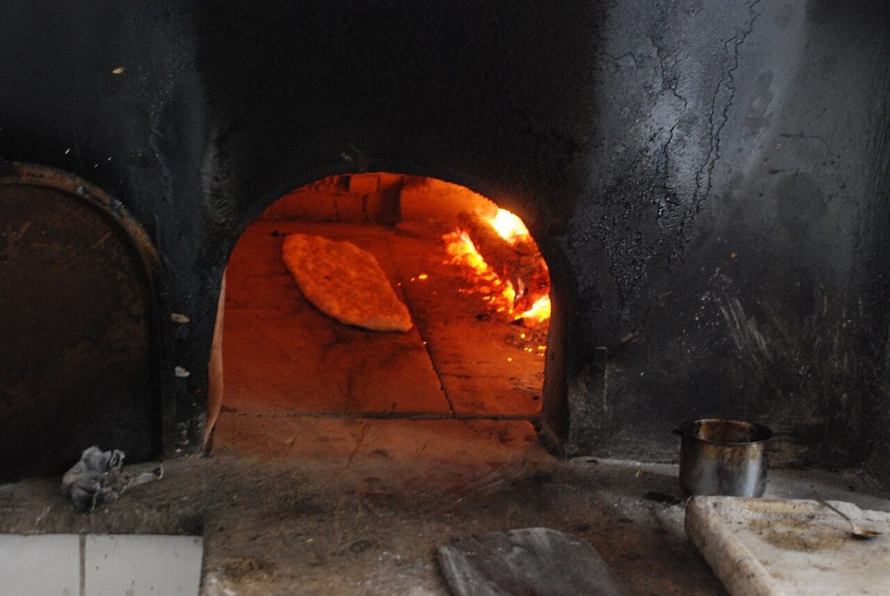

メニュー
メニューは準備中です
メニューと価格は準備中です。確認でき次第、こちらに掲載します。
230℃準備中
メニュー・価格・ご予約
| メニュー | 準備中 |
|---|---|
| 価格 | 準備中 |
| ご予約 | 準備中 |
下の写真は「パンの温度」の雰囲気を伝えるためのフリー素材で、お店で提供している商品ではありません。提供内容を示すものでもありません。



メニュー
メニューと価格は準備中です。確認でき次第、こちらに掲載します。
| メニュー | 準備中 |
|---|---|
| 価格 | 準備中 |
| ご予約 | 準備中 |
下の写真は「パンの温度」の雰囲気を伝えるためのフリー素材で、お店で提供している商品ではありません。提供内容を示すものでもありません。
